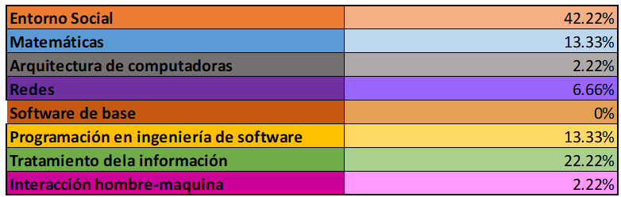

Su función del LATI es apoyar al usuario en todas las necesidades que tenga acerca de la selección de los sistemas de información de la infraestructura de cómputo, de la modificación e implantación de los mismos. Los LATI combinan el conocimiento de tecnologías de información con el área administrativa, lo que les facilita la incorporación a los negocios y también de captar la mejor tecnología para estos.
La Asociación Nacional de Instituciones de Educación en Tecnologías de Información (ANIEI) ha creado una clasificación de 8 áreas en las que las carreras tecnológicas se dividen. En la siguiente tabla te ponemos el porcentaje con el que la carrera cuenta con respecto a estas áreas.

Puedes encontrar más información con respecto a estas áreas en el siguiente documento creado por la ANIEI
- Apoyan a los LIS en los proyectos a la hora del levantamiento de requerimientos enfocados en las necesidades del usuario.
- Empresas de consultoría.
- Empresas de desarrollo de software.
- Ventas de equipo de cómputo.
- Despachos contables (teniendo la función de la auditoría de los departamentos de tecnologías de información).
- Cualquier área donde existan tecnologías de información
Valeria
3er semestre
¿Por qué elegiste esta carrera?
Porque está algo relacionada con la parte de redes sociales, programación y administración, que son cosas que me gustan.
¿Qué es lo que más te gusta de tu carrera?
La parte tecnológica.
Conforme vas aprobando cada semestre, más interesante se pone la carrera.
Que no se deje llevar si al principio piensa que "no es lo que esperaba", ya luego de un par de semestres se torna interesante.
22/01/2021